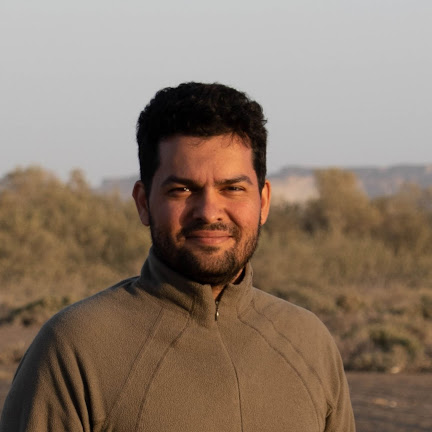

Community ecology · Functional ecology
Pedram
Ghahramani
Studying biodiversity and ecological communities, from benthic invertebrates in mangroves to broader questions about community assembly and environmental change.
- Marine biodiversity
- Biogeography
- Predictive ecology

My broader interests include macroecology, biogeography, and eco-evolutionary dynamics. I am interested in mechanistic and predictive approaches to understanding ecological communities.
More about me ↗